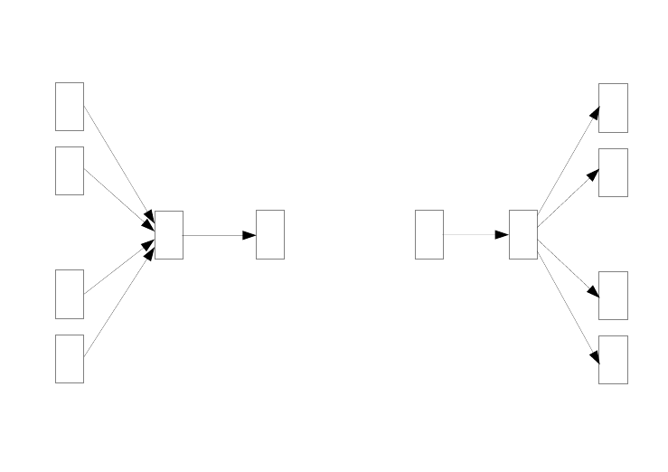
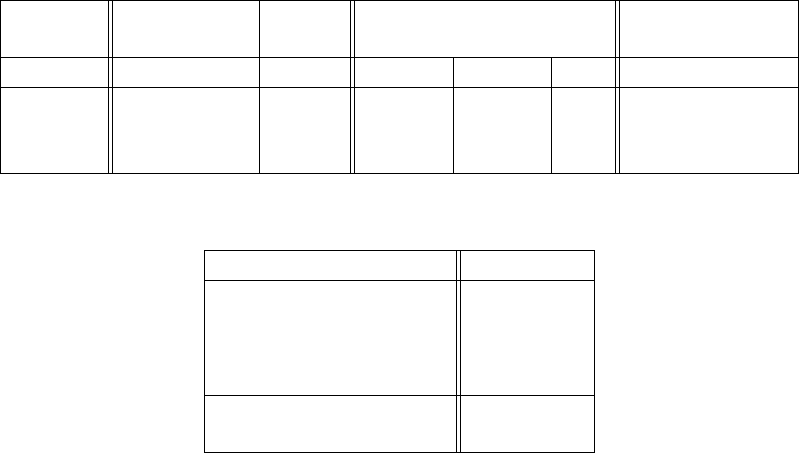

Efficient Estimation of Word Representations in
Vector Space
Tomas Mikolov
Google Inc., Mountain View, CA
tmikolov@google.com
Kai Chen
Google Inc., Mountain View, CA
kaichen@google.com
Greg Corrado
Google Inc., Mountain View, CA
gcorrado@google.com
Jeffrey Dean
Google Inc., Mountain View, CA
jeff@google.com
Abstract
We propose two novel model architectures for computing continuous vector repre-
sentations of words from very large data sets. The quality of these representations
is measured in a word similarity task, and the results are compared to the previ-
ously best performing techniques based on different types of neural networks. We
observe large improvements in accuracy at much lower computational cost, i.e. it
takes less than a day to learn high quality word vectors from a 1.6 billion words
data set. Furthermore, we show that these vectors provide state-of-the-art perfor-
mance on our test set for measuring syntactic and semantic word similarities.
1 Introduction
Many current NLP systems and techniques treat words as atomic units - there is no notion of similar-
ity between words, as these are represented as indices in a vocabulary. This choice has several good
reasons - simplicity, robustness and the observation that simple models trained on huge amounts of
data outperform complex systems trained on less data. An example is the popular N-gram model
used for statistical language modeling - today, it is possible to train N-grams on virtually all available
data (trillions of words [3]).
However, the simple techniques are at their limits in many tasks. For example, the amount of
relevant in-domain data for automatic speech recognition is limited - the performance is usually
dominated by the size of high quality transcribed speech data (often just millions of words). In
machine translation, the existing corpora for many languages contain only a few billions of words
or less. Thus, there are situations where simple scaling up of the basic techniques will not result in
any significant progress, and we have to focus on more advanced techniques.
With progress of machine learning techniques in recent years, it has become possible to train more
complex models on much larger data set, and they typically outperform the simple models. Probably
the most successful concept is to use distributed representations of words [10]. For example, neural
network based language models significantly outperform N-gram models [1, 27, 17].
1.1 Goals of the Paper
The main goal of this paper is to introduce techniques that can be used for learning high-quality word
vectors from huge data sets with billions of words, and with millions of words in the vocabulary. As
far as we know, none of the previously proposed architectures has been successfully trained on more
1
arXiv:1301.3781v3 [cs.CL] 7 Sep 2013
than a few hundred of millions of words, with a modest dimensionality of the word vectors between
50 - 100.
We use recently proposed techniques for measuring the quality of the resulting vector representa-
tions, with the expectation that not only will similar words tend to be close to each other, but that
words can have multiple degrees of similarity [20]. This has been observed earlier in the context
of inflectional languages - for example, nouns can have multiple word endings, and if we search for
similar words in a subspace of the original vector space, it is possible to find words that have similar
endings [13, 14].
Somewhat surprisingly, it was found that similarity of word representations goes beyond simple
syntactic regularities. Using a word offset technique where simple algebraic operations are per-
formed on the word vectors, it was shown for example that vector(”King”) - vector(”Man”) + vec-
tor(”Woman”) results in a vector that is closest to the vector representation of the word Queen [20].
In this paper, we try to maximize accuracy of these vector operations by developing new model
architectures that preserve the linear regularities among words. We design a new comprehensive test
set for measuring both syntactic and semantic regularities
1
, and show that many such regularities
can be learned with high accuracy. Moreover, we discuss how training time and accuracy depends
on the dimensionality of the word vectors and on the amount of the training data.
1.2 Previous Work
Representation of words as continuous vectors has a long history [10, 26, 8]. A very popular model
architecture for estimating neural network language model (NNLM) was proposed in [1], where a
feedforward neural network with a linear projection layer and a non-linear hidden layer was used to
learn jointly the word vector representation and a statistical language model. This work has been
followed by many others.
Another interesting architecture of NNLM was presented in [13, 14], where the word vectors are
first learned using neural network with a single hidden layer. The word vectors are then used to train
the NNLM. Thus, the word vectors are learned even without constructing the full NNLM. In this
work, we directly extend this architecture, and focus just on the first step where the word vectors are
learned using a simple model.
It was later shown that the word vectors can be used to significantly improve and simplify many
NLP applications [4, 5, 29]. Estimation of the word vectors itself was performed using different
model architectures and trained on various corpora [4, 29, 23, 19, 9], and some of the resulting word
vectors were made available for future research and comparison
2
. However, as far as we know, these
architectures were significantly more computationally expensive for training than the one proposed
in [13], with the exception of certain version of log-bilinear model where diagonal weight matrices
are used [23].
2 Model Architectures
Many different types of models were proposed for estimating continuous representations of words,
including the well-known Latent Semantic Analysis (LSA) and Latent Dirichlet Allocation (LDA).
In this paper, we focus on distributed representations of words learned by neural networks, as it was
previously shown that they perform significantly better than LSA for preserving linear regularities
among words [20, 31]; LDA moreover becomes computationally very expensive on large data sets.
Similar to [18], to compare different model architectures we define first the computational complex-
ity of a model as the number of parameters that need to be accessed to fully train the model. Next,
we will try to maximize the accuracy, while minimizing the computational complexity.
1
The test set is available at www.fit.vutbr.cz/
˜
imikolov/rnnlm/word-test.v1.txt
2
http://ronan.collobert.com/senna/
http://metaoptimize.com/projects/wordreprs/
http://www.fit.vutbr.cz/
˜
imikolov/rnnlm/
http://ai.stanford.edu/
˜
ehhuang/
2

For all the following models, the training complexity is proportional to
O = E × T × Q, (1)
where E is number of the training epochs, T is the number of the words in the training set and Q is
defined further for each model architecture. Common choice is E = 3 − 50 and T up to one billion.
All models are trained using stochastic gradient descent and backpropagation [26].
2.1 Feedforward Neural Net Language Model (NNLM)
The probabilistic feedforward neural network language model has been proposed in [1]. It consists
of input, projection, hidden and output layers. At the input layer, N previous words are encoded
using 1-of-V coding, where V is size of the vocabulary. The input layer is then projected to a
projection layer P that has dimensionality N × D, using a shared projection matrix. As only N
inputs are active at any given time, composition of the projection layer is a relatively cheap operation.
The NNLM architecture becomes complex for computation between the projection and the hidden
layer, as values in the projection layer are dense. For a common choice of N = 10, the size of the
projection layer (P ) might be 500 to 2000, while the hidden layer size H is typically 500 to 1000
units. Moreover, the hidden layer is used to compute probability distribution over all the words in the
vocabulary, resulting in an output layer with dimensionality V . Thus, the computational complexity
per each training example is
Q = N × D + N × D × H + H × V, (2)
where the dominating term is H × V . However, several practical solutions were proposed for
avoiding it; either using hierarchical versions of the softmax [25, 23, 18], or avoiding normalized
models completely by using models that are not normalized during training [4, 9]. With binary tree
representations of the vocabulary, the number of output units that need to be evaluated can go down
to around log
2
(V ). Thus, most of the complexity is caused by the term N × D × H.
In our models, we use hierarchical softmax where the vocabulary is represented as a Huffman binary
tree. This follows previous observations that the frequency of words works well for obtaining classes
in neural net language models [16]. Huffman trees assign short binary codes to frequent words, and
this further reduces the number of output units that need to be evaluated: while balanced binary tree
would require log
2
(V ) outputs to be evaluated, the Huffman tree based hierarchical softmax requires
only about log
2
(Unigram perplexity(V )). For example when the vocabulary size is one million
words, this results in about two times speedup in evaluation. While this is not crucial speedup for
neural network LMs as the computational bottleneck is in the N × D× H term, we will later propose
architectures that do not have hidden layers and thus depend heavily on the efficiency of the softmax
normalization.
2.2 Recurrent Neural Net Language Model (RNNLM)
Recurrent neural network based language model has been proposed to overcome certain limitations
of the feedforward NNLM, such as the need to specify the context length (the order of the model N ),
and because theoretically RNNs can efficiently represent more complex patterns than the shallow
neural networks [15, 2]. The RNN model does not have a projection layer; only input, hidden and
output layer. What is special for this type of model is the recurrent matrix that connects hidden
layer to itself, using time-delayed connections. This allows the recurrent model to form some kind
of short term memory, as information from the past can be represented by the hidden layer state that
gets updated based on the current input and the state of the hidden layer in the previous time step.
The complexity per training example of the RNN model is
Q = H × H + H × V, (3)
where the word representations D have the same dimensionality as the hidden layer H. Again, the
term H × V can be efficiently reduced to H × log
2
(V ) by using hierarchical softmax. Most of the
complexity then comes from H × H.
3
2.3 Parallel Training of Neural Networks
To train models on huge data sets, we have implemented several models on top of a large-scale
distributed framework called DistBelief [6], including the feedforward NNLM and the new models
proposed in this paper. The framework allows us to run multiple replicas of the same model in
parallel, and each replica synchronizes its gradient updates through a centralized server that keeps
all the parameters. For this parallel training, we use mini-batch asynchronous gradient descent with
an adaptive learning rate procedure called Adagrad [7]. Under this framework, it is common to use
one hundred or more model replicas, each using many CPU cores at different machines in a data
center.
3 New Log-linear Models
In this section, we propose two new model architectures for learning distributed representations
of words that try to minimize computational complexity. The main observation from the previous
section was that most of the complexity is caused by the non-linear hidden layer in the model. While
this is what makes neural networks so attractive, we decided to explore simpler models that might
not be able to represent the data as precisely as neural networks, but can possibly be trained on much
more data efficiently.
The new architectures directly follow those proposed in our earlier work [13, 14], where it was
found that neural network language model can be successfully trained in two steps: first, continuous
word vectors are learned using simple model, and then the N-gram NNLM is trained on top of these
distributed representations of words. While there has been later substantial amount of work that
focuses on learning word vectors, we consider the approach proposed in [13] to be the simplest one.
Note that related models have been proposed also much earlier [26, 8].
3.1 Continuous Bag-of-Words Model
The first proposed architecture is similar to the feedforward NNLM, where the non-linear hidden
layer is removed and the projection layer is shared for all words (not just the projection matrix);
thus, all words get projected into the same position (their vectors are averaged). We call this archi-
tecture a bag-of-words model as the order of words in the history does not influence the projection.
Furthermore, we also use words from the future; we have obtained the best performance on the task
introduced in the next section by building a log-linear classifier with four future and four history
words at the input, where the training criterion is to correctly classify the current (middle) word.
Training complexity is then
Q = N × D + D × log
2
(V ). (4)
We denote this model further as CBOW, as unlike standard bag-of-words model, it uses continuous
distributed representation of the context. The model architecture is shown at Figure 1. Note that the
weight matrix between the input and the projection layer is shared for all word positions in the same
way as in the NNLM.
3.2 Continuous Skip-gram Model
The second architecture is similar to CBOW, but instead of predicting the current word based on the
context, it tries to maximize classification of a word based on another word in the same sentence.
More precisely, we use each current word as an input to a log-linear classifier with continuous
projection layer, and predict words within a certain range before and after the current word. We
found that increasing the range improves quality of the resulting word vectors, but it also increases
the computational complexity. Since the more distant words are usually less related to the current
word than those close to it, we give less weight to the distant words by sampling less from those
words in our training examples.
The training complexity of this architecture is proportional to
Q = C × (D + D × log
2
(V )), (5)
where C is the maximum distance of the words. Thus, if we choose C = 5, for each training word
we will select randomly a number R in range < 1; C >, and then use R words from history and
4

w(t-2)
w(t+1)
w(t-1)
w(t+2)
w(t)
SUM
INPUT PROJECTION OUTPUT
w(t)
INPUT PROJECTION OUTPUT
w(t-2)
w(t-1)
w(t+1)
w(t+2)
CBOW Skip-gram
Figure 1: New model architectures. The CBOW architecture predicts the current word based on the
context, and the Skip-gram predicts surrounding words given the current word.
R words from the future of the current word as correct labels. This will require us to do R × 2
word classifications, with the current word as input, and each of the R + R words as output. In the
following experiments, we use C = 10.
4 Results
To compare the quality of different versions of word vectors, previous papers typically use a table
showing example words and their most similar words, and understand them intuitively. Although
it is easy to show that word France is similar to Italy and perhaps some other countries, it is much
more challenging when subjecting those vectors in a more complex similarity task, as follows. We
follow previous observation that there can be many different types of similarities between words, for
example, word big is similar to bigger in the same sense that small is similar to smaller. Example
of another type of relationship can be word pairs big - biggest and small - smallest [20]. We further
denote two pairs of words with the same relationship as a question, as we can ask: ”What is the
word that is similar to small in the same sense as biggest is similar to big?”
Somewhat surprisingly, these questions can be answered by performing simple algebraic operations
with the vector representation of words. To find a word that is similar to small in the same sense as
biggest is similar to big, we can simply compute vector X = vector(”biggest”) − vector(”big”) +
vector(”small”). Then, we search in the vector space for the word closest to X measured by cosine
distance, and use it as the answer to the question (we discard the input question words during this
search). When the word vectors are well trained, it is possible to find the correct answer (word
smallest) using this method.
Finally, we found that when we train high dimensional word vectors on a large amount of data, the
resulting vectors can be used to answer very subtle semantic relationships between words, such as
a city and the country it belongs to, e.g. France is to Paris as Germany is to Berlin. Word vectors
with such semantic relationships could be used to improve many existing NLP applications, such
as machine translation, information retrieval and question answering systems, and may enable other
future applications yet to be invented.
5
Table 1: Examples of five types of semantic and nine types of syntactic questions in the Semantic-
Syntactic Word Relationship test set.
Type of relationship Word Pair 1 Word Pair 2
Common capital city Athens Greece Oslo Norway
All capital cities Astana Kazakhstan Harare Zimbabwe
Currency Angola kwanza Iran rial
City-in-state Chicago Illinois Stockton California
Man-Woman brother sister grandson granddaughter
Adjective to adverb apparent apparently rapid rapidly
Opposite possibly impossibly ethical unethical
Comparative great greater tough tougher
Superlative easy easiest lucky luckiest
Present Participle think thinking read reading
Nationality adjective Switzerland Swiss Cambodia Cambodian
Past tense walking walked swimming swam
Plural nouns mouse mice dollar dollars
Plural verbs work works speak speaks
4.1 Task Description
To measure quality of the word vectors, we define a comprehensive test set that contains five types
of semantic questions, and nine types of syntactic questions. Two examples from each category are
shown in Table 1. Overall, there are 8869 semantic and 10675 syntactic questions. The questions
in each category were created in two steps: first, a list of similar word pairs was created manually.
Then, a large list of questions is formed by connecting two word pairs. For example, we made a
list of 68 large American cities and the states they belong to, and formed about 2.5K questions by
picking two word pairs at random. We have included in our test set only single token words, thus
multi-word entities are not present (such as New York).
We evaluate the overall accuracy for all question types, and for each question type separately (se-
mantic, syntactic). Question is assumed to be correctly answered only if the closest word to the
vector computed using the above method is exactly the same as the correct word in the question;
synonyms are thus counted as mistakes. This also means that reaching 100% accuracy is likely
to be impossible, as the current models do not have any input information about word morphology.
However, we believe that usefulness of the word vectors for certain applications should be positively
correlated with this accuracy metric. Further progress can be achieved by incorporating information
about structure of words, especially for the syntactic questions.
4.2 Maximization of Accuracy
We have used a Google News corpus for training the word vectors. This corpus contains about
6B tokens. We have restricted the vocabulary size to 1 million most frequent words. Clearly, we
are facing time constrained optimization problem, as it can be expected that both using more data
and higher dimensional word vectors will improve the accuracy. To estimate the best choice of
model architecture for obtaining as good as possible results quickly, we have first evaluated models
trained on subsets of the training data, with vocabulary restricted to the most frequent 30k words.
The results using the CBOW architecture with different choice of word vector dimensionality and
increasing amount of the training data are shown in Table 2.
It can be seen that after some point, adding more dimensions or adding more training data provides
diminishing improvements. So, we have to increase both vector dimensionality and the amount
of the training data together. While this observation might seem trivial, it must be noted that it is
currently popular to train word vectors on relatively large amounts of data, but with insufficient size
6
Table 2: Accuracy on subset of the Semantic-Syntactic Word Relationship test set, using word
vectors from the CBOW architecture with limited vocabulary. Only questions containing words from
the most frequent 30k words are used.
Dimensionality / Training words 24M 49M 98M 196M 391M 783M
50 13.4 15.7 18.6 19.1 22.5 23.2
100 19.4 23.1 27.8 28.7 33.4 32.2
300 23.2 29.2 35.3 38.6 43.7 45.9
600 24.0 30.1 36.5 40.8 46.6 50.4
Table 3: Comparison of architectures using models trained on the same data, with 640-dimensional
word vectors. The accuracies are reported on our Semantic-Syntactic Word Relationship test set,
and on the syntactic relationship test set of [20]
Model Semantic-Syntactic Word Relationship test set MSR Word Relatedness
Architecture Semantic Accuracy [%] Syntactic Accuracy [%] Test Set [20]
RNNLM 9 36 35
NNLM 23 53 47
CBOW 24 64 61
Skip-gram 55 59 56
(such as 50 - 100). Given Equation 4, increasing amount of training data twice results in about the
same increase of computational complexity as increasing vector size twice.
For the experiments reported in Tables 2 and 4, we used three training epochs with stochastic gradi-
ent descent and backpropagation. We chose starting learning rate 0.025 and decreased it linearly, so
that it approaches zero at the end of the last training epoch.
4.3 Comparison of Model Architectures
First we compare different model architectures for deriving the word vectors using the same training
data and using the same dimensionality of 640 of the word vectors. In the further experiments, we
use full set of questions in the new Semantic-Syntactic Word Relationship test set, i.e. unrestricted to
the 30k vocabulary. We also include results on a test set introduced in [20] that focuses on syntactic
similarity between words
3
.
The training data consists of several LDC corpora and is described in detail in [18] (320M words,
82K vocabulary). We used these data to provide a comparison to a previously trained recurrent
neural network language model that took about 8 weeks to train on a single CPU. We trained a feed-
forward NNLM with the same number of 640 hidden units using the DistBelief parallel training [6],
using a history of 8 previous words (thus, the NNLM has more parameters than the RNNLM, as the
projection layer has size 640 × 8).
In Table 3, it can be seen that the word vectors from the RNN (as used in [20]) perform well mostly
on the syntactic questions. The NNLM vectors perform significantly better than the RNN - this is
not surprising, as the word vectors in the RNNLM are directly connected to a non-linear hidden
layer. The CBOW architecture works better than the NNLM on the syntactic tasks, and about the
same on the semantic one. Finally, the Skip-gram architecture works slightly worse on the syntactic
task than the CBOW model (but still better than the NNLM), and much better on the semantic part
of the test than all the other models.
Next, we evaluated our models trained using one CPU only and compared the results against publicly
available word vectors. The comparison is given in Table 4. The CBOW model was trained on subset
3
We thank Geoff Zweig for providing us the test set.
7
Table 4: Comparison of publicly available word vectors on the Semantic-Syntactic Word Relation-
ship test set, and word vectors from our models. Full vocabularies are used.
Model Vector Training Accuracy [%]
Dimensionality words
Semantic Syntactic Total
Collobert-Weston NNLM 50 660M 9.3 12.3 11.0
Turian NNLM 50 37M 1.4 2.6 2.1
Turian NNLM 200 37M 1.4 2.2 1.8
Mnih NNLM 50 37M 1.8 9.1 5.8
Mnih NNLM 100 37M 3.3 13.2 8.8
Mikolov RNNLM 80 320M 4.9 18.4 12.7
Mikolov RNNLM 640 320M 8.6 36.5 24.6
Huang NNLM 50 990M 13.3 11.6 12.3
Our NNLM 20 6B 12.9 26.4 20.3
Our NNLM 50 6B 27.9 55.8 43.2
Our NNLM 100 6B 34.2 64.5 50.8
CBOW 300 783M 15.5 53.1 36.1
Skip-gram 300 783M 50.0 55.9 53.3
Table 5: Comparison of models trained for three epochs on the same data and models trained for
one epoch. Accuracy is reported on the full Semantic-Syntactic data set.
Model Vector Training Accuracy [%] Training time
Dimensionality words [days]
Semantic Syntactic Total
3 epoch CBOW 300 783M 15.5 53.1 36.1 1
3 epoch Skip-gram 300 783M 50.0 55.9 53.3 3
1 epoch CBOW 300 783M 13.8 49.9 33.6 0.3
1 epoch CBOW 300 1.6B 16.1 52.6 36.1 0.6
1 epoch CBOW 600 783M 15.4 53.3 36.2 0.7
1 epoch Skip-gram 300 783M 45.6 52.2 49.2 1
1 epoch Skip-gram 300 1.6B 52.2 55.1 53.8 2
1 epoch Skip-gram 600 783M 56.7 54.5 55.5 2.5
of the Google News data in about a day, while training time for the Skip-gram model was about three
days.
For experiments reported further, we used just one training epoch (again, we decrease the learning
rate linearly so that it approaches zero at the end of training). Training a model on twice as much
data using one epoch gives comparable or better results than iterating over the same data for three
epochs, as is shown in Table 5, and provides additional small speedup.
4.4 Large Scale Parallel Training of Models
As mentioned earlier, we have implemented various models in a distributed framework called Dis-
tBelief. Below we report the results of several models trained on the Google News 6B data set,
with mini-batch asynchronous gradient descent and the adaptive learning rate procedure called Ada-
grad [7]. We used 50 to 100 model replicas during the training. The number of CPU cores is an
8

Table 6: Comparison of models trained using the DistBelief distributed framework. Note that
training of NNLM with 1000-dimensional vectors would take too long to complete.
Model Vector Training Accuracy [%] Training time
Dimensionality words [days x CPU cores]
Semantic Syntactic Total
NNLM 100 6B 34.2 64.5 50.8 14 x 180
CBOW 1000 6B 57.3 68.9 63.7 2 x 140
Skip-gram 1000 6B 66.1 65.1 65.6 2.5 x 125
Table 7: Comparison and combination of models on the Microsoft Sentence Completion Challenge.
Architecture Accuracy [%]
4-gram [32] 39
Average LSA similarity [32] 49
Log-bilinear model [24] 54.8
RNNLMs [19] 55.4
Skip-gram 48.0
Skip-gram + RNNLMs 58.9
estimate since the data center machines are shared with other production tasks, and the usage can
fluctuate quite a bit. Note that due to the overhead of the distributed framework, the CPU usage of
the CBOW model and the Skip-gram model are much closer to each other than their single-machine
implementations. The result are reported in Table 6.
4.5 Microsoft Research Sentence Completion Challenge
The Microsoft Sentence Completion Challenge has been recently introduced as a task for advancing
language modeling and other NLP techniques [32]. This task consists of 1040 sentences, where one
word is missing in each sentence and the goal is to select word that is the most coherent with the
rest of the sentence, given a list of five reasonable choices. Performance of several techniques has
been already reported on this set, including N-gram models, LSA-based model [32], log-bilinear
model [24] and a combination of recurrent neural networks that currently holds the state of the art
performance of 55.4% accuracy on this benchmark [19].
We have explored the performance of Skip-gram architecture on this task. First, we train the 640-
dimensional model on 50M words provided in [32]. Then, we compute score of each sentence in
the test set by using the unknown word at the input, and predict all surrounding words in a sentence.
The final sentence score is then the sum of these individual predictions. Using the sentence scores,
we choose the most likely sentence.
A short summary of some previous results together with the new results is presented in Table 7.
While the Skip-gram model itself does not perform on this task better than LSA similarity, the scores
from this model are complementary to scores obtained with RNNLMs, and a weighted combination
leads to a new state of the art result 58.9% accuracy (59.2% on the development part of the set and
58.7% on the test part of the set).
5 Examples of the Learned Relationships
Table 8 shows words that follow various relationships. We follow the approach described above: the
relationship is defined by subtracting two word vectors, and the result is added to another word. Thus
for example, Paris - France + Italy = Rome. As it can be seen, accuracy is quite good, although
there is clearly a lot of room for further improvements (note that using our accuracy metric that
9
Table 8: Examples of the word pair relationships, using the best word vectors from Table 4 (Skip-
gram model trained on 783M words with 300 dimensionality).
Relationship Example 1 Example 2 Example 3
France - Paris Italy: Rome Japan: Tokyo Florida: Tallahassee
big - bigger small: larger cold: colder quick: quicker
Miami - Florida Baltimore: Maryland Dallas: Texas Kona: Hawaii
Einstein - scientist Messi: midfielder Mozart: violinist Picasso: painter
Sarkozy - France Berlusconi: Italy Merkel: Germany Koizumi: Japan
copper - Cu zinc: Zn gold: Au uranium: plutonium
Berlusconi - Silvio Sarkozy: Nicolas Putin: Medvedev Obama: Barack
Microsoft - Windows Google: Android IBM: Linux Apple: iPhone
Microsoft - Ballmer Google: Yahoo IBM: McNealy Apple: Jobs
Japan - sushi Germany: bratwurst France: tapas USA: pizza
assumes exact match, the results in Table 8 would score only about 60%). We believe that word
vectors trained on even larger data sets with larger dimensionality will perform significantly better,
and will enable the development of new innovative applications. Another way to improve accuracy is
to provide more than one example of the relationship. By using ten examples instead of one to form
the relationship vector (we average the individual vectors together), we have observed improvement
of accuracy of our best models by about 10% absolutely on the semantic-syntactic test.
It is also possible to apply the vector operations to solve different tasks. For example, we have
observed good accuracy for selecting out-of-the-list words, by computing average vector for a list of
words, and finding the most distant word vector. This is a popular type of problems in certain human
intelligence tests. Clearly, there is still a lot of discoveries to be made using these techniques.
6 Conclusion
In this paper we studied the quality of vector representations of words derived by various models on
a collection of syntactic and semantic language tasks. We observed that it is possible to train high
quality word vectors using very simple model architectures, compared to the popular neural network
models (both feedforward and recurrent). Because of the much lower computational complexity, it
is possible to compute very accurate high dimensional word vectors from a much larger data set.
Using the DistBelief distributed framework, it should be possible to train the CBOW and Skip-gram
models even on corpora with one trillion words, for basically unlimited size of the vocabulary. That
is several orders of magnitude larger than the best previously published results for similar models.
An interesting task where the word vectors have recently been shown to significantly outperform the
previous state of the art is the SemEval-2012 Task 2 [11]. The publicly available RNN vectors were
used together with other techniques to achieve over 50% increase in Spearman’s rank correlation
over the previous best result [31]. The neural network based word vectors were previously applied
to many other NLP tasks, for example sentiment analysis [12] and paraphrase detection [28]. It can
be expected that these applications can benefit from the model architectures described in this paper.
Our ongoing work shows that the word vectors can be successfully applied to automatic extension
of facts in Knowledge Bases, and also for verification of correctness of existing facts. Results
from machine translation experiments also look very promising. In the future, it would be also
interesting to compare our techniques to Latent Relational Analysis [30] and others. We believe that
our comprehensive test set will help the research community to improve the existing techniques for
estimating the word vectors. We also expect that high quality word vectors will become an important
building block for future NLP applications.
10
7 Follow-Up Work
After the initial version of this paper was written, we published single-machine multi-threaded C++
code for computing the word vectors, using both the continuous bag-of-words and skip-gram archi-
tectures
4
. The training speed is significantly higher than reported earlier in this paper, i.e. it is in the
order of billions of words per hour for typical hyperparameter choices. We also published more than
1.4 million vectors that represent named entities, trained on more than 100 billion words. Some of
our follow-up work will be published in an upcoming NIPS 2013 paper [21].
References
[1] Y. Bengio, R. Ducharme, P. Vincent. A neural probabilistic language model. Journal of Ma-
chine Learning Research, 3:1137-1155, 2003.
[2] Y. Bengio, Y. LeCun. Scaling learning algorithms towards AI. In: Large-Scale Kernel Ma-
chines, MIT Press, 2007.
[3] T. Brants, A. C. Popat, P. Xu, F. J. Och, and J. Dean. Large language models in machine
translation. In Proceedings of the Joint Conference on Empirical Methods in Natural Language
Processing and Computational Language Learning, 2007.
[4] R. Collobert and J. Weston. A Unified Architecture for Natural Language Processing: Deep
Neural Networks with Multitask Learning. In International Conference on Machine Learning,
ICML, 2008.
[5] R. Collobert, J. Weston, L. Bottou, M. Karlen, K. Kavukcuoglu and P. Kuksa. Natural Lan-
guage Processing (Almost) from Scratch. Journal of Machine Learning Research, 12:2493-
2537, 2011.
[6] J. Dean, G.S. Corrado, R. Monga, K. Chen, M. Devin, Q.V. Le, M.Z. Mao, M.A. Ranzato, A.
Senior, P. Tucker, K. Yang, A. Y. Ng., Large Scale Distributed Deep Networks, NIPS, 2012.
[7] J.C. Duchi, E. Hazan, and Y. Singer. Adaptive subgradient methods for online learning and
stochastic optimization. Journal of Machine Learning Research, 2011.
[8] J. Elman. Finding Structure in Time. Cognitive Science, 14, 179-211, 1990.
[9] Eric H. Huang, R. Socher, C. D. Manning and Andrew Y. Ng. Improving Word Representations
via Global Context and Multiple Word Prototypes. In: Proc. Association for Computational
Linguistics, 2012.
[10] G.E. Hinton, J.L. McClelland, D.E. Rumelhart. Distributed representations. In: Parallel dis-
tributed processing: Explorations in the microstructure of cognition. Volume 1: Foundations,
MIT Press, 1986.
[11] D.A. Jurgens, S.M. Mohammad, P.D. Turney, K.J. Holyoak. Semeval-2012 task 2: Measuring
degrees of relational similarity. In: Proceedings of the 6th International Workshop on Semantic
Evaluation (SemEval 2012), 2012.
[12] A.L. Maas, R.E. Daly, P.T. Pham, D. Huang, A.Y. Ng, and C. Potts. Learning word vectors for
sentiment analysis. In Proceedings of ACL, 2011.
[13] T. Mikolov. Language Modeling for Speech Recognition in Czech, Masters thesis, Brno Uni-
versity of Technology, 2007.
[14] T. Mikolov, J. Kopeck
´
y, L. Burget, O. Glembek and J.
ˇ
Cernock
´
y. Neural network based lan-
guage models for higly inflective languages, In: Proc. ICASSP 2009.
[15] T. Mikolov, M. Karafi
´
at, L. Burget, J.
ˇ
Cernock
´
y, S. Khudanpur. Recurrent neural network
based language model, In: Proceedings of Interspeech, 2010.
[16] T. Mikolov, S. Kombrink, L. Burget, J.
ˇ
Cernock
´
y, S. Khudanpur. Extensions of recurrent neural
network language model, In: Proceedings of ICASSP 2011.
[17] T. Mikolov, A. Deoras, S. Kombrink, L. Burget, J.
ˇ
Cernock
´
y. Empirical Evaluation and Com-
bination of Advanced Language Modeling Techniques, In: Proceedings of Interspeech, 2011.
4
The code is available at https://code.google.com/p/word2vec/
11
[18] T. Mikolov, A. Deoras, D. Povey, L. Burget, J.
ˇ
Cernock
´
y. Strategies for Training Large Scale
Neural Network Language Models, In: Proc. Automatic Speech Recognition and Understand-
ing, 2011.
[19] T. Mikolov. Statistical Language Models based on Neural Networks. PhD thesis, Brno Univer-
sity of Technology, 2012.
[20] T. Mikolov, W.T. Yih, G. Zweig. Linguistic Regularities in Continuous Space Word Represen-
tations. NAACL HLT 2013.
[21] T. Mikolov, I. Sutskever, K. Chen, G. Corrado, and J. Dean. Distributed Representations of
Words and Phrases and their Compositionality. Accepted to NIPS 2013.
[22] A. Mnih, G. Hinton. Three new graphical models for statistical language modelling. ICML,
2007.
[23] A. Mnih, G. Hinton. A Scalable Hierarchical Distributed Language Model. Advances in Neural
Information Processing Systems 21, MIT Press, 2009.
[24] A. Mnih, Y.W. Teh. A fast and simple algorithm for training neural probabilistic language
models. ICML, 2012.
[25] F. Morin, Y. Bengio. Hierarchical Probabilistic Neural Network Language Model. AISTATS,
2005.
[26] D. E. Rumelhart, G. E. Hinton, R. J. Williams. Learning internal representations by back-
propagating errors. Nature, 323:533.536, 1986.
[27] H. Schwenk. Continuous space language models. Computer Speech and Language, vol. 21,
2007.
[28] R. Socher, E.H. Huang, J. Pennington, A.Y. Ng, and C.D. Manning. Dynamic Pooling and
Unfolding Recursive Autoencoders for Paraphrase Detection. In NIPS, 2011.
[29] J. Turian, L. Ratinov, Y. Bengio. Word Representations: A Simple and General Method for
Semi-Supervised Learning. In: Proc. Association for Computational Linguistics, 2010.
[30] P. D. Turney. Measuring Semantic Similarity by Latent Relational Analysis. In: Proc. Interna-
tional Joint Conference on Artificial Intelligence, 2005.
[31] A. Zhila, W.T. Yih, C. Meek, G. Zweig, T. Mikolov. Combining Heterogeneous Models for
Measuring Relational Similarity. NAACL HLT 2013.
[32] G. Zweig, C.J.C. Burges. The Microsoft Research Sentence Completion Challenge, Microsoft
Research Technical Report MSR-TR-2011-129, 2011.
12